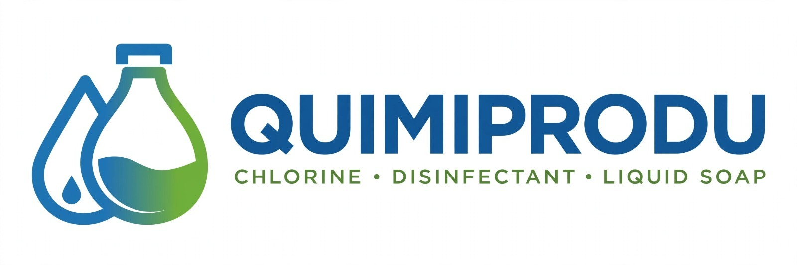
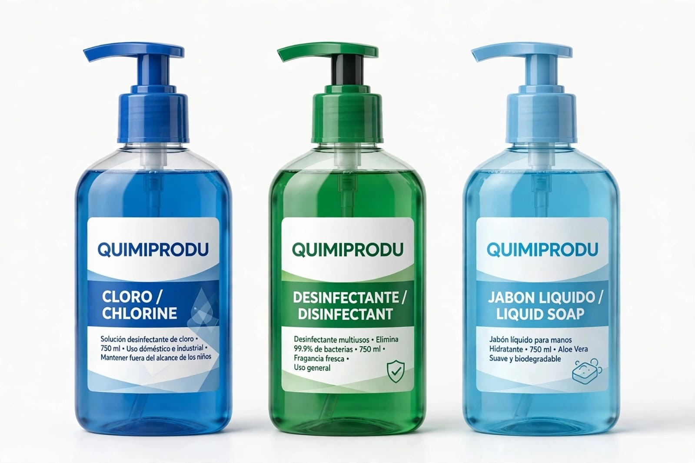

Somos estudiantes de la Unidad Educativa Fiscal Provincia de Bolívar y participamos en un proyecto educativo desarrollado en colaboración con los estudiantes de segundo de bachillerato. A través de QUIMIPRODU, combinamos nuestros conocimientos, la creatividad y el trabajo en equipo para presentar una propuesta relacionada con productos químicos de limpieza.
Nuestra iniciativa busca dar a conocer productos como cloro, desinfectante y jabón líquido, mostrando información general sobre ellos y sus respectivos precios. Mediante esta página web queremos facilitar que los visitantes conozcan nuestra propuesta de una forma sencilla y ordenada.
Además, este proyecto nos permite poner en práctica los conocimientos adquiridos en informática, especialmente en el diseño y la programación web. Así demostramos cómo la tecnología puede ayudarnos a presentar ideas de emprendimiento y compartir información con otras personas.
Nuestro objetivo es presentar los productos de QUIMIPRODU a través de una página web atractiva, organizada y fácil de utilizar, donde los visitantes puedan consultar sus características generales y precios.
Dar a conocer nuestra propuesta estudiantil de productos de limpieza, ofreciendo información clara y promoviendo el uso responsable de los productos químicos.
Fortalecer nuestros conocimientos tecnológicos y emprendedores mediante un proyecto que refleje responsabilidad, creatividad y colaboración.

Presentamos tres productos principales: cloro, desinfectante y jabón líquido. Cada uno tiene características y usos específicos, por lo que recomendamos seguir las indicaciones de su etiqueta.
El respeto, la responsabilidad, la creatividad, la organización y el trabajo en equipo son valores que nos ayudan a desarrollar nuestra propuesta y cumplir con las actividades del proyecto.